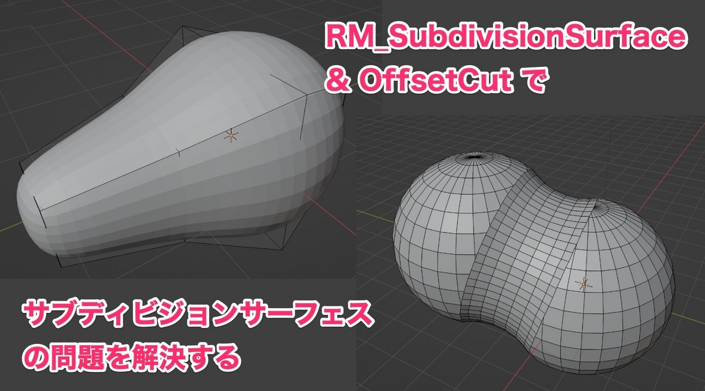
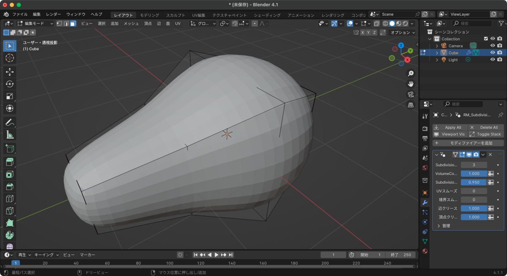
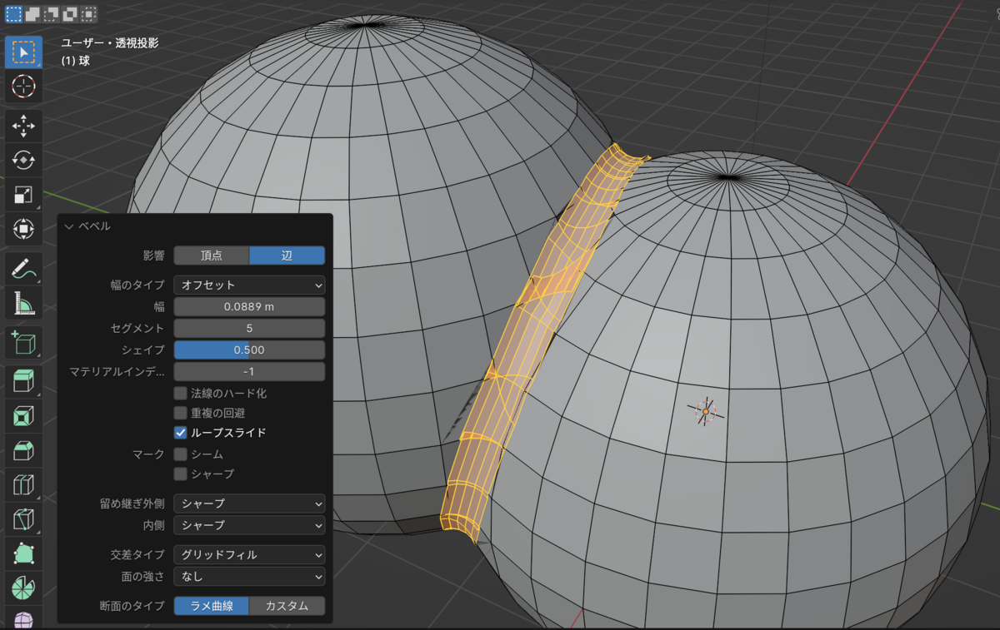
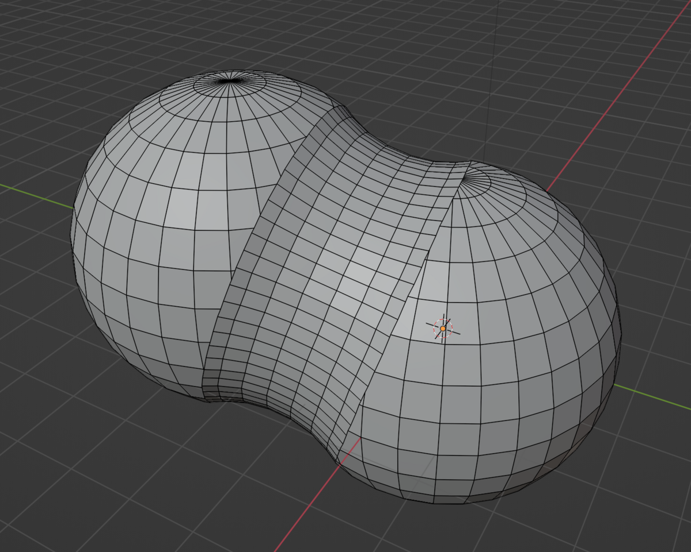

先日、以下の記事を書いて以来、というかPlasticityのおかげでいつの間にかBlenderの操作に慣れており、最近はすっかりBlenderばかり使っています。
CAD→スカルプトについての連載記事でも言及したのですが、Subdiv（サブディビジョン・サーフェス）にはいくつか課題があり、改めてBlenderを使っていく上で、解決したいなと感じていたところ、偶然にもGeometry Nodeを使った新たな解法を提供してくれるアドオンを見つけたので、ご紹介します。
こちらは、Subdivの最大の課題である、メッシュの痩せ細りを制御できるアドオンです。しかもそればかりか、Subdivをどれくらい適用するかや、クリースをどれくらい適用するかなど、様々なパラメータを柔軟にコントロールすることができます。
以下は、まず通常のSubdivを適用した場合です。基準になるメッシュに対して、だいぶ体積が小さく、痩せ細っていることがわかります。
一方で以下は、RM_Subdivによって、体積や適用具合を制御したものです。体積が維持され、制御点に近くなっていることがわかります。もちろんですが度合いは制御することができ、通常のSubdivよりもさらに体積を小さくすることもできます。

これで、例えば図面通りに点を打ったにもかかわらず、Subdivによって体積が縮まって、少し内側になってしまう問題を解決することができます。すごいですね。
こちらは、CADでは普通に行うことができる、柔軟なベベルが、メッシュの境目によって制限されてしまうという、Subdivのよくある問題を解決するためのものです。
元々は、Mesh Machineというアドオンの機能の一つであるOffset Cutを、Geometry Nodeで実装し直したもので、アルゴリズムもより洗練されています。
例えば以下は、通常のベベルを実行したものですが、メッシュが密になっていると、破綻し、ごく狭い区間でしかベベルできません。

一方で以下は、Offset Cutによって先に指定した辺の周りのメッシュをカットしておいて、ベベルをかけたものです。まるでメタボールのように、大きく、滑らかなベベルが実現できています。

ちなみに、KushiroさんのHard BevelとSoft Bevelも、ベベルの破綻を避けるためのアドオンです。こちらもうまく活用すると、より柔軟にベベルをつけることができるでしょう。
これらのアドオンを活用すれば、もしかするとCADでは計算不可能なベベルでも、ポリゴンモデリングのほうがかえって思い通りのベベルをつけることができるようになるかもしれません。
さて今回は、Subdivの問題点を解決してくれる2つのアドオンをご紹介しました。奇しくも、両者ともGeometry Nodeを使ったもので、従来のBlenderアドオンのようなPythonコードを配布するものではなくて、Geometry Nodeを含んだBlenderファイルを配布し、ユーザライブラリに追加して利用するという、比較的新しい形態のアドオンです。
Geometry Nodeにはこんな可能性があるのだと思わせてくれますし、Pythonとは違ってビジュアルノードグラフで構築できるというのも魅力的です。
こうしてアルゴリズム自体を改良して、新たなモディファイアやツールが誕生するというのは、本当に素晴らしいことだと思います。Blenderの進化がどんどん進んでいくと、思いも寄らないような可能性が拓けるかもしれませんね。